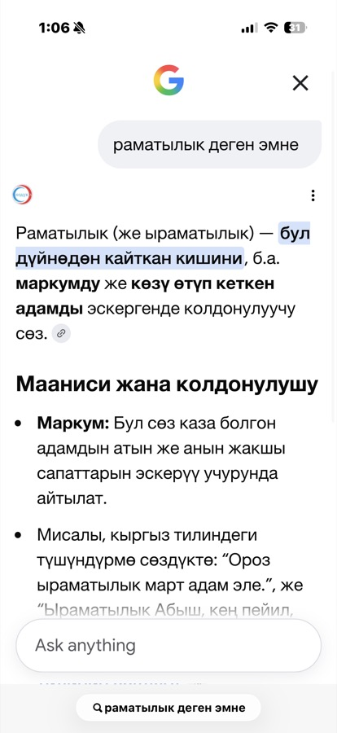
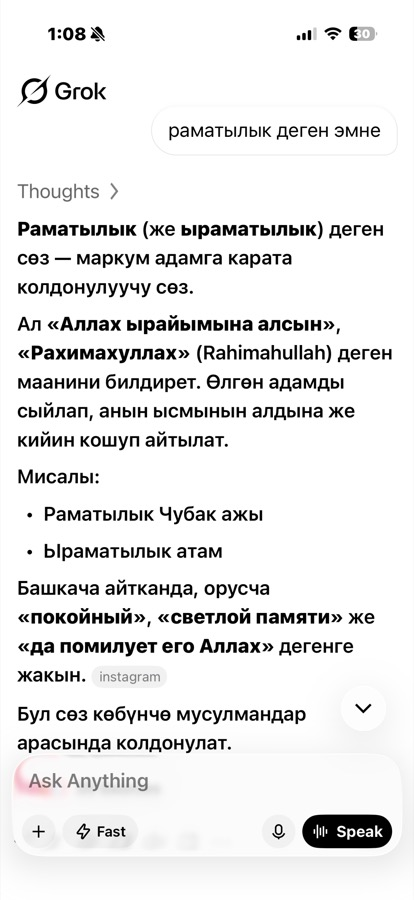
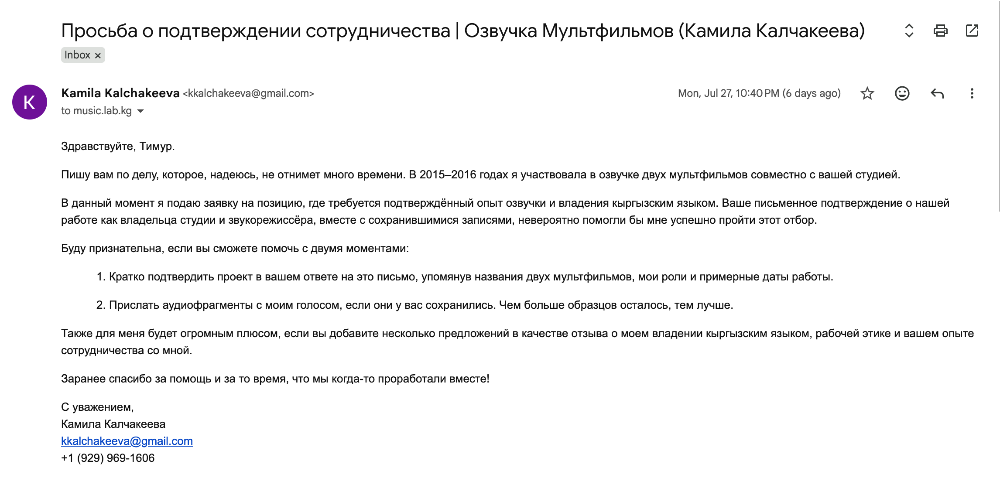
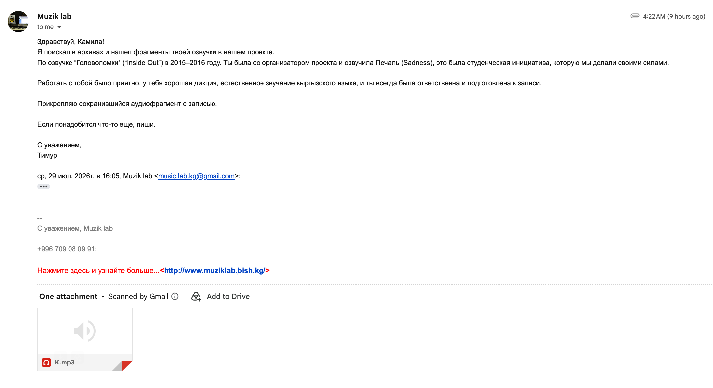

Native Kyrgyz speaker (Bishkek / Northern dialect) · Software Engineer working daily with AI model validation & calibration · Voice & localization background
I grew up between Bishkek and At-Bashy in the Naryn region, so I've lived inside both the standard Bishkek dialect and a more rural, regional way of speaking Kyrgyz. I studied journalism at Kyrgyz-Turkish Manas University, where coursework was taught and examined entirely in Kyrgyz and Turkish, so I spent years reading and writing formal Kyrgyz, not just speaking it at home. I'm also fluent in Russian and Turkish.
That range matters for AI language work specifically. Almost nobody in Kyrgyzstan speaks "pure" textbook Kyrgyz day to day. Real spoken Kyrgyz is layered with Russian loanwords, a growing number of English ones, and occasional Turkish influence, and knowing why a word gets borrowed is as important as knowing the word itself.
A simple example: Kyrgyz speakers almost never use a native word for "bed," they use the Russian loanword instead. That isn't sloppy Kyrgyz, it's history. Kyrgyz people were traditionally nomadic, and a bed frame doesn't travel well, so households slept on floor bedding, "жер төшөк." There was no established native word for a raised bed frame when settled housing, and Russian furniture vocabulary, arrived. An AI that "corrects" this kind of loanword back to an invented "pure" Kyrgyz term would actually be wrong, not more accurate.
I work with AI models professionally. At American Express I validate, calibrate, and guide model behavior for production use cases, so working carefully with a model's output isn't new territory for me, it's a discipline I already practice. I'm also multilingual and have lived abroad for years, which means I know firsthand what it feels like to miss your mother tongue and watch it thin out online for lack of content. I want this role for Kyrgyz speakers scattered far from home who want an AI that actually speaks their language correctly, not an approximation of it, and just as much for the younger generation still in Kyrgyzstan who grew up speaking mostly Russian and are actively trying to reconnect with their native tongue. Both groups need the same thing, Kyrgyz that sounds real and accurate, not invented or flattened. I volunteer extensively in tech, especially supporting women and underrepresented folks, and this feels like a direct extension of that: a way to give back to my language, my roots, my people.
I actively test how AI models handle culturally loaded Kyrgyz vocabulary, words that carry meaning beyond their dictionary definition. This is a real comparison I ran, prompting both models with the same question: «раматылык деген эмне?» ("What does ramatylyk mean?"), a word used to refer respectfully to someone who has passed away.


Grok's core definition is accurate: «Раматылык (же ыраматылык) деген сөз - маркум адамга карата колдонулуучу сөз» ("Ramatylyk is a word used to refer to a deceased person"), and it correctly identifies the placement pattern before and after a name ("Раматылык Чубак ажы," "Ырматылык атам") and the Russian equivalents ("покойный," "светлой памяти").
Grok closes with «Бул сөз көбүнчө мусулмандар арасында колдонулат», meaning "this word is used mostly among Muslims." That line is inaccurate. Ramatylyk is ordinary, everyday Kyrgyz vocabulary, used across the Kyrgyz-speaking population regardless of religious practice, the same way "покойный" or "светлой памяти" function in Russian without signaling the speaker's faith. Framing a core piece of everyday Kyrgyz through a primarily religious lens misrepresents how the word is actually used, and risks flattening a much broader, more secular linguistic reality into a narrower one.
Gemini's answer, by contrast, defines the word by grounding it directly in the Kyrgyz explanatory dictionary, «...дүйнөдөн кайткан кишини... эскергенде колдонулуучу сөз», with example sentences and no religious framing at all, which matches how the word is actually used day to day.
This is the kind of error a fluent-but-non-native reviewer would likely wave through, because the Kyrgyz is grammatical and confident-sounding. Catching it requires a reviewer who actually lives inside the language's cultural context, not just its grammar.
Almost a decade ago, I co-organized and voiced Sadness for an independent Kyrgyz dub of Pixar's Inside Out, produced with a local recording studio because I wanted Kyrgyz-speaking audiences to have real animated content in their own language. Below is a confirmation from the studio owner, who was also co-leader of the initiative, followed by an audio sample of the Joy and Sadness dialogue with the transcript underneath it.
"Working with you was a pleasure. You have good diction, natural-sounding Kyrgyz, and you were always responsible and prepared for recording sessions."

Hello, Timur. I'm writing about something that I hope won't take much of your time. In 2015 to 2016 I worked on voice-over for two animated films together with your studio. I'm currently applying for a position that requires confirmed voice-over experience and Kyrgyz language proficiency. Your written confirmation of our work, as the studio owner and sound engineer, along with any surviving recordings, would help me enormously in this selection process. I would be grateful if you could help with two things. First, briefly confirm the project in your reply, mentioning the names of the two animated films, my roles, and approximate work dates. Second, send any audio fragments with my voice if you still have them, the more samples the better. It would also be a huge plus if you could add a few sentences as a reference about my Kyrgyz language ability, work ethic, and your experience collaborating with me. Thank you in advance for your help and for the time we once worked together.

Hi Kamila. I searched our archives and found fragments of your voice work from our project, the Kyrgyz dub of Inside Out (2015 to 2016). You were a co-organizer of the project and voiced Sadness. It was a student-led initiative we produced ourselves. It was a pleasure working with you, you have good diction, natural-sounding Kyrgyz, and you were always responsible and well-prepared for recording sessions. I'm attaching the surviving audio fragment. If you need anything else, let me know.
This transcript is not a literal translation, lines were adapted for natural spoken rhythm and lip-sync timing.
I voice Sadness. Joy's lines are performed by a fellow cast member and included for scene context.
Full script for the entire film (English to Kyrgyz, timestamped) available on request.